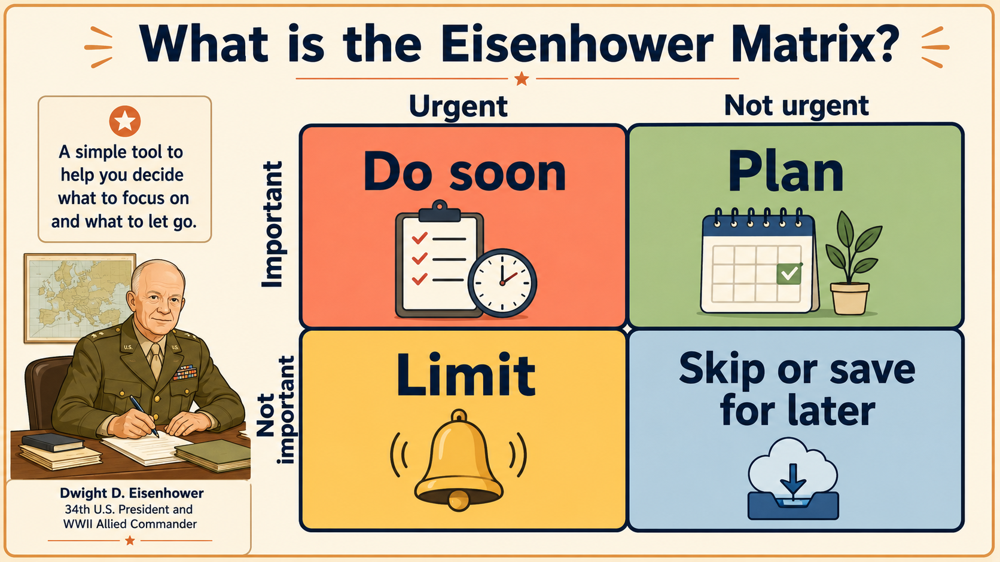

flowchart TD P["CLEAR<br/>prompt"] --> A["AI draft<br/>matrix"] A --> C["Check<br/>criteria and scores"] C --> V["Verify<br/>facts"] V --> D["Student<br/>decides"]
5 Lesson 3: Making Better Decisions in English
Duration: 2 hours
TipYour Path
You are in: Lesson 3
Before this: Lesson 2
After this: Lesson 4
Workbook page: Student Workbook -> Lesson 3 - English Decision Matrix
5.1 Start Here
You make decisions every day. Which class to take. Which job to apply for. How to spend time and money. AI can help you see options and compare them in English. But AI does not know your life. You do. Today you will learn a simple decision matrix and a human final decision rule.
5.2 Why This Matters
Decisions will determine your future. Making a more informed, conscientious decision can lead to better outcomes. AI can help you see the full picture, but you must check the details and make the final choice. This skill will help you in school, work, and life.
TipWrite in the Book
Some exercises in the website version are interactive. You can type your answers directly on the page, and you can copy or download a backup if your teacher asks.
The main task is to write in the book, not to create separate files.
5.3 Decision Poll: Are We Really in Control?
5.4 Today You Will
By the end of this lesson, you will:
- Learn what a matrix is and the parts of a decision matrix.
- Use a CLEAR prompt template for a decision matrix.
- Compare options using criteria, weights, risks, and evidence.
- Write a final decision and explain your reason.
- Explain why AI should not make the final decision.
- Complete the matching Student Workbook page.
NoteLesson Reference
Theme: AI can help compare choices, but people make the final decision.
AI Focus: CLEAR AI-assisted decision matrix.
ESL Focus: Comparatives, modals, reasons, risk language, and checking language.
Content Objective: Students will use a CLEAR prompt to organize one safe decision and write a human final decision reason.
Language Objective: Students will use English comparison language:
Option A is cheaper than Option B.
Option B is more convenient.
AI suggested...
I checked...
I might choose...
I chose this because...
The risk is...5.5 Core Idea
A matrix is a table with a job. It organizes ideas in rows and columns.
A decision matrix is a matrix for comparing choices. You pick the things that matter to you, called criteria. You add options, weights, scores, and short evidence notes.
AI can help organize the matrix quickly. It can suggest criteria, scores, assumptions, and risks. But AI does not know your whole life. You must check the draft matrix, verify important facts, adjust weak parts, and make the final decision.
ImportantHuman Final Decision Rule
AI can help you compare. You make the final decision.
NoteMethod Note
This activity adapts the decision matrix, also called a Pugh matrix, decision grid, or selection matrix. A decision matrix helps compare options against criteria and can use weights when some criteria matter more (American Society for Quality n.d.).
5.6 Key Vocabulary
Key Vocabulary Match
Choose the word that matches each meaning and example sentence.
Not saved yet
A table that helps compare choicesI used a matrix to compare two options.
A choice after thinkingMy decision is to study at night.
One possible choiceBus and train are two options.
Look at choices togetherI compare cost and time.
The things that matter in a decisionMy criteria are cost and time.
How important a criterion isSafety has a high weight.
A number for how well an option fitsI gave the bus a score of 4.
Information that supports a score or reasonThe schedule is evidence.
A possible problemThe risk is arriving late.
Something I think is true but need to checkMy assumption is that the bus is on time.
Check if something is trueI need to verify the price.
5.7 Sentence Frames
For me, the most important criterion is __________.
Option A is cheaper than Option B.
Option B is more convenient than Option A.
AI suggested __________, but I need to check __________.
I changed the score for __________ because __________.
I might choose __________ because __________.
Before I decide, I need to check __________.
AI helped me compare, but I chose __________.5.8 Lesson Agenda
| Time | Activity | Purpose |
|---|---|---|
| 20 min | Interactive activity: Decision Poll | Notice what can influence a decision. |
| 15 min | Mini-lesson: what is a matrix and decision matrix basics | Learn options, criteria, weights, scores, risks, and evidence. |
| 15 min | Problem and mission: Maria’s job offers | Predict the obvious choice before the matrix. |
| 25 min | CLEAR prompt and guided matrix reveal | Ask AI to organize, then compare the result. |
| 30 min | Independent practice: prompt and final decision | Build the prompt, then write the final decision and reason. |
| 15 min | Pair speaking and exit ticket | Explain the decision and what to verify. |
5.9 First: What Is a Matrix?
A matrix is a table with a job. It organizes ideas in rows and columns so we can compare, sort, or decide. A normal table stores information, but a matrix helps us use information to make better decisions. It is like a map for your ideas because it shows where each idea belongs. One useful example is the Eisenhower Matrix, which helps people sort tasks.
The Eisenhower Matrix is named after Dwight D. Eisenhower. During World War II, Eisenhower was a U.S. general and the leader of Allied forces in Europe. He had to think about many important tasks, urgent problems, risks, and deadlines. This kind of thinking was important because leaders had to decide what needed action now and what needed careful planning. Today, people use the same idea for school, work, and everyday life.

Ask two questions:
- Is it important?
- Is it urgent?
| Task type | Urgent | Not urgent |
|---|---|---|
| Important | Do soon | Plan |
| Not important | Limit | Skip or save for later |
Try it as a class. Where does each task go?
| Task | Possible place |
|---|---|
| Homework due tomorrow | Important + urgent: Do soon |
| English practice for this week | Important + not urgent: Plan |
| Checking a small message | Not important + urgent: Limit |
| Choosing a phone wallpaper | Not important + not urgent: Skip or save for later |
This matrix helps us sort tasks. Next, a decision matrix will help us compare choices.
5.10 From Polls to a Decision Matrix
The poll showed that words, numbers, defaults, choices, ownership, loss, and people can influence decisions. A decision matrix helps us slow down and compare options more clearly.
Now try one bigger decision.
5.11 The Job Offer Problem
Maria receives two fictional job offers after graduating.
Her first reaction is obvious:
I should take Job Offer A. It pays $12,000 more per year.Before you see the full matrix, vote quickly:
Which offer looks better at first?
A. Offer A: $82,000 salary
B. Offer B: $70,000 salary
C. I am not sureAt first glance, Offer A looks better because $82,000 is more than $70,000. But salary is only one part of the decision.
5.11.1 The Job Offers
| Detail | Offer A: Higher salary, weaker fit | Offer B: Lower salary, stronger fit |
|---|---|---|
| Salary | $82,000 | $70,000 |
| Commute | 60 minutes each way | 15 minutes each way |
| Manager | Seems demanding and unclear | Supportive and clear |
| Growth | Limited training and unclear promotion path | Strong training program and mentorship |
| Benefits | Basic health insurance, little retirement match | Better health insurance, retirement match, paid professional development |
| Work-life balance | Often requires evenings | Stable schedule, hybrid flexibility |
5.12 Your Mission
Help Maria see the full picture, not only salary.
Your mission is to use a decision matrix and a CLEAR AI-assisted prompt to organize the decision. AI can help make the table, but Maria must check the result and make the final decision.
Salary can hide important questions:
- How much time will the commute take?
- Will the manager and team support learning?
- Is there training for future growth?
- Will the schedule be healthy and sustainable?
- What facts still need verification?
5.13 CLEAR AI-Assisted Matrix Prompt
5.13.1 Copy the Maria Job Offers Prompt
Use this complete prompt for the class example. It uses fictional job offers, so it is safe to copy into the school-provided AI tool.
CLEAR Maria job offers prompt
Context:
I am an English learner practicing decision-making.
I need help organizing a safe fictional job-offer decision into a decision matrix.
The decision is: Should Maria choose Offer A or Offer B?
Offer A: Higher salary, weaker fit
Salary: $82,000.
Commute: 60 minutes each way.
Manager: Seems demanding and unclear.
Growth: Limited training and unclear promotion path.
Benefits: Basic health insurance and little retirement match.
Work-life balance: Often requires evenings.
Offer B: Lower salary, stronger fit
Salary: $70,000.
Commute: 15 minutes each way.
Manager: Supportive and clear.
Growth: Strong training program and mentorship.
Benefits: Better health insurance, retirement match, and paid professional development.
Work-life balance: Stable schedule and hybrid flexibility.
Limits:
Use simple English.
Do not ask for private information.
Do not make the final decision for Maria.
Do not invent facts. Write "Needs verification" when information is missing.
Do not give medical, legal, immigration, financial, or emergency advice.
Treat scores as draft suggestions that Maria must check.
Example or output format:
Make a weighted decision matrix with these columns:
Criteria | Weight | Offer A Score | Offer A Weighted | Offer B Score | Offer B Weighted | Evidence / Notes
Use scores from 1 to 5, where 5 is best.
Use useful criteria such as salary / compensation, career growth, manager / team quality, work-life balance, and commute / flexibility.
After the table, list:
1. One assumption Maria should check.
2. One risk Maria might forget.
3. One fact Maria should verify.
Ask:
Organize Maria's job-offer decision into a decision matrix.
Review:
Before answering, check that this task is fictional, safe, simple, and does not include private information.
End with: "Maria makes the final decision."
5.13.2 Copy the Template for Your Own Safe Decision
Copy this template for independent practice. Replace the bracketed parts with safe fictional or everyday details. Use the school-provided AI tool if your teacher asks you to test it.
CLEAR decision matrix prompt template for your own decision
Context:
I am an English learner practicing decision-making.
I need help organizing a safe fictional or everyday decision into a decision matrix.
The decision is: [decision question].
The options are:
A. [option A]
B. [option B]
Important details I know:
[short safe facts only]
Limits:
Use simple English.
Do not ask for private information.
Do not make the final decision for me.
Do not invent facts. Write "Needs verification" when information is missing.
Do not give medical, legal, immigration, financial, or emergency advice.
Treat scores as draft suggestions that I must check.
Example or output format:
Make a table with:
Criteria | Weight | Option A Score | Option A Weighted | Option B Score | Option B Weighted | Evidence / Notes
Use scores from 1 to 5, where 5 is best.
After the table, list:
1. One assumption I should check.
2. One risk I might forget.
3. One fact I should verify.
End with: "You make the final decision."
Ask:
Organize this decision into a decision matrix.
Review:
Before answering, check that the task is safe, simple, and does not include private information.
5.14 Guided Practice
5.14.1 Compare Two Job Offers
Maria decides salary matters, but it should not be the only factor.
| Criterion | Weight | Why it matters |
|---|---|---|
| Salary / compensation | 30% | Income is important. |
| Career growth | 25% | Future opportunities matter. |
| Manager / team quality | 20% | Daily experience matters. |
| Work-life balance | 15% | Health and sustainability matter. |
| Commute / flexibility | 10% | Time, stress, and cost matter. |
Scores are from 1 to 5, where 5 is best.
| Criteria | Weight | Offer A Score | Offer A Weighted | Offer B Score | Offer B Weighted |
|---|---|---|---|---|---|
| Salary / compensation | 0.30 | 5 | 1.50 | 3 | 0.90 |
| Career growth | 0.25 | 2 | 0.50 | 5 | 1.25 |
| Manager / team quality | 0.20 | 2 | 0.40 | 5 | 1.00 |
| Work-life balance | 0.15 | 2 | 0.30 | 4 | 0.60 |
| Commute / flexibility | 0.10 | 1 | 0.10 | 5 | 0.50 |
| Total | 1.00 | 2.80 | 4.25 |
5.15 The Decision Reversal
The intuitive choice was:
Take Offer A because it pays more.The decision matrix suggests:
Offer B may be stronger overall.Offer A wins on salary. Offer B wins on career growth, manager quality, work-life balance, and commute. The matrix does not force the final decision, but it helps Maria see the full picture.
5.16 The Commute Twist
Offer A commute:
2 hours per day x 5 days = 10 hours per weekOffer B commute:
30 minutes per day x 5 days = 2.5 hours per weekDifference:
7.5 hours per week x 48 working weeks = 360 extra hours per yearThat is like losing nine full 40-hour workweeks every year just to commute.
Without the matrix, Maria focused only on salary. With the matrix, she can see long-term value, stress, growth, and daily life.
The mind-blowing idea: the biggest number is not always the best value.
5.16.1 Practice the Comparison Sentences
Write three comparison sentences. Examples:
Offer A pays more than Offer B.
Offer B has a shorter commute than Offer A.
I might choose Offer B because growth and work-life balance are important.Job Offer Comparison Sentences
Write in the book. Your answers save on this device.
Not saved yet
5.17 Independent Practice
Choose one safe everyday or fictional decision. You may use:
- a study schedule
- transportation for a class or appointment
- a food plan for the week
- a learning goal
- a safe fictional job offer example
- a public phone-plan comparison with no private account details
Do not use private financial, medical, legal, immigration, school, or work decisions for practice. Do not paste private documents or personal job details into AI.
Complete two writing parts:
- Build the prompt. Use the CLEAR decision matrix prompt template. Replace the bracketed parts with your safe decision, options, and details.
- Make your final decision. Write your choice in your own English. Explain your reason.
Sentence frames:
My final decision is __________.
I chose this because __________.
AI can help me compare, but I make the final decision.Write directly in this workbook page. It is your Lesson 3 evidence.
English Decision Matrix
Write directly in this workbook page.
Not saved yet
5.18 Pair Speaking or Presentation Task
Explain your prompt and final decision to a partner.
I am choosing between __________ and __________.
My CLEAR prompt asks AI to organize __________.
One important criterion is __________.
My final decision is __________.
I chose this because __________.
AI can help me compare, but I make the final decision.5.19 Reflection
Reflection
Write three short sentences.
Not saved yet
5.20 Exit Ticket
Show your teacher:
Exit Ticket
Show these two answers to your teacher.
Not saved yet
5.21 Homework
Estimated time: 30-45 minutes.
5.21.1 Homework: My Dream Decision
Think about one dream or goal you want to accomplish. Then choose one decision that could help you move closer to that dream.
Examples:
- Should I study English 30 minutes every day?
- Should I ask a teacher or tutor for help?
- Should I reduce social media during study time?
- Should I choose a career pathway or course?
- Should I create a weekly study schedule?
AI can help you evaluate options, but you make the final decision.
Do not use private financial, medical, legal, immigration, school, or work records. Use safe general decisions about study habits, support, time use, course exploration, or career pathways.
Tasks:
- Choose one dream or goal.
- Choose one decision that could help your dream.
- Write a prompt to help evaluate the decision.
- Complete the simple decision matrix.
- Write your final decision in 3-5 sentences.
- Submit your homework by email or the student portal.
5.21.2 Student Task
Submit three things:
The prompt Write a prompt that could help evaluate your decision.
Example:
Help me decide if I should study English for 30 minutes every day to reach my dream of becoming a nurse. Compare the benefits, challenges, time needed, and how this decision can help my future.The decision matrix Complete this simple matrix.
Option Helps My Dream? 1-5 Motivation 1-5 Time/Effort 1-5 Support Available 1-5 Total Option A Option B The final decision Write 3-5 sentences. Answer these questions:
- What decision did you choose?
- Why did you choose it?
- How will it help your dream?
- What is your first small step?
Final sentence frame:
I decided to ______ because it will help me ______. This decision supports my dream by ______. My first step will be ______.5.21.3 Copyable Homework Submission Template
Copy this template. Replace the blanks with your own safe details.
My Dream Decision homework template
My dream:
My dream or goal is __________.
My decision question:
Should I __________?
The prompt:
Help me decide if I should __________ to reach my dream of __________. Compare the benefits, challenges, time needed, support available, and how this decision can help my future. Use simple English. Do not make the final decision for me.
The decision matrix:
Option | Helps My Dream? 1-5 | Motivation 1-5 | Time/Effort 1-5 | Support Available 1-5 | Total
Option A: __________ | ___ | ___ | ___ | ___ | ___
Option B: __________ | ___ | ___ | ___ | ___ | ___
My final decision:
I decided to __________ because it will help me __________.
This decision supports my dream by __________.
My first step will be __________.
5.21.4 What to Submit
You may draft your homework anywhere. To submit your homework, use email or the student portal. Follow your teacher’s instructions.
Your homework submission must include only:
- the prompt
- the completed decision matrix
- the 3-5 sentence final decision
What to complete:
- Student Workbook page: Lesson 3 - English Decision Matrix
- updated
Vocabulary Log - My Dream Decision homework submission by email or student portal
Privacy reminder: Do not use private financial, medical, legal, immigration, school, or work records. Do not paste private documents or personal job details into AI.
Optional extension: Open the Lessons 3-4 Decision Matrix Lab if your teacher asks.
TipOptional Colab Lab
This lab is optional. Use it only if your teacher asks or if you want extra practice. You do not need to complete the lab to finish your portfolio.
Open the Lessons 3-4 Decision Matrix Lab in Colab:
Use safe examples only. Do not enter private information.
The lab uses Colab AI automatically when it is available in the Colab runtime. If Colab AI is not available, the regular lab steps still work, and you can finish your portfolio without AI.
After any AI answer, say: “I checked the AI answer before I used it.”
ImportantRequired Workbook Evidence
Complete this workbook evidence:
Student Workbook -> Lesson 3 - English Decision Matrix